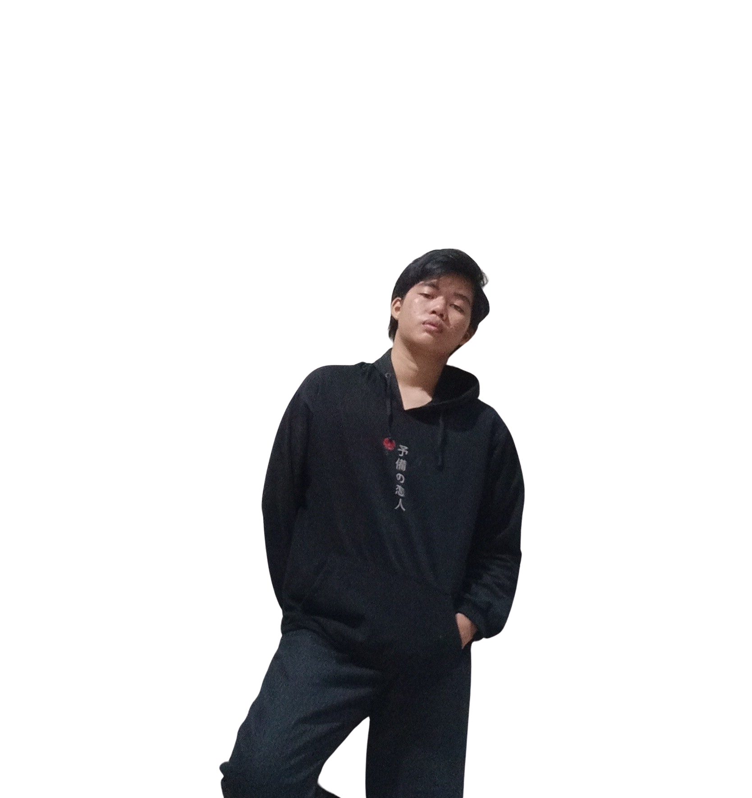

Tentang Saya
Nama : Ahmad Rahman
Tempat dan Tanggal Lahir: Kopeang, 29 Maret 2005
Pendidikan : Teknik Informatika Universitas Sulawesi Barat
Alamat : Desa Ralleanak Utara Kecamatan Aralle Kabupaten Mamasa
Hobi dan Minat : Melamun, membaca, traveling
Keterlibatan Komunitas:
[2019] - Pramuka Sri Sultan Giat Dan Terampil (Pasgat)
[2019] - Ikatan Pelajar Muhammadiyah (IPM)